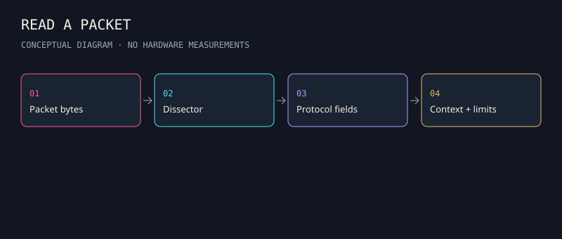

ip
reports or changes Linux interfaces, routes and related network state. How: communicates with the local kernel's networking interfaces.
Evidence limits + official reference →

Real publisher screenshots. Learn to read the screen regions.
What it does. How it works. What the output means.
Twenty core entries connect everyday IT to security observation. Installed manuals and versions matter.
reports or changes Linux interfaces, routes and related network state. How: communicates with the local kernel's networking interfaces.
Evidence limits + official reference →reports socket state. How: asks the kernel about local sockets and applies selection criteria.
Evidence limits + official reference →asks a DNS server for records. How: constructs a DNS query and decodes the answer and status.
Evidence limits + official reference →transfers data using supported protocols. How: implements client-side protocol exchanges with configurable request behavior.
Evidence limits + official reference →provides cryptographic and certificate utilities. How: dispatches subcommands to cryptographic implementations and parsers.
Evidence limits + official reference →discovers network hosts/services and reports observed state. How: sends selected probes and interprets responses or their absence; discovery and service classification depend on the technique and vantage point.
Evidence limits + official reference →decodes captured network traffic; TShark exposes analysis through a CLI. How: dissectors interpret packet bytes and may reconstruct higher-level conversations.
Evidence limits + official reference →captures or reads packets and prints selected information. How: uses packet-capture facilities and capture-filter expressions.
Evidence limits + official reference →makes browser HTTP exchanges inspectable. How: a configured browser routes requests through a proxy; interception can pause them, while HTTP history records them.
Evidence limits + official reference →analyzes HTTP messages for configured issues. How: passive scan rules inspect traffic already passing through ZAP without generating their own attack requests.
Evidence limits + official reference →queries systemd journal records. How: selects stored entries by fields, time and other criteria.
Evidence limits + official reference →reads Windows event-log records. How: queries supported event sources and returns objects that can be selected or filtered.
Evidence limits + official reference →records configured endpoint activity on Windows. How: a service and driver supply events to the Windows event log under a chosen configuration.
Evidence limits + official reference →matches file or memory content against rules. How: evaluates declared patterns and Boolean conditions over the input.
Evidence limits + official reference →expresses detections in a structured, portable rule format. How: declares a log source, selections and a condition; supported tooling translates the rule to a backend query.
Evidence limits + official reference →turns observed network activity into structured evidence. How: protocol analysis and event-driven logic emit connection and application records.
Evidence limits + official reference →supports network intrusion detection/prevention and security monitoring. How: decodes traffic and applies configured detection logic; deployment mode determines whether it can enforce actions.
Evidence limits + official reference →audits supported Unix-like hosts for security and configuration concerns. How: runs applicable checks against the available local configuration.
Evidence limits + official reference →helps analyze compiled software. How: disassembly, analysis and decompilation reconstruct useful representations from executable bytes.
Evidence limits + official reference →provides a digital-forensics interface and analysis workflow. How: ingest modules examine supplied evidence and expose artifacts for review.
Evidence limits + official reference →